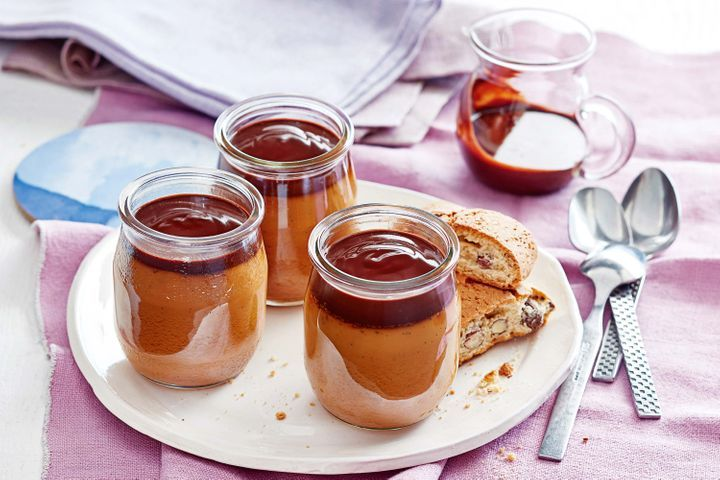

Warm salted caramel pots

Description
A classic pots recipe with a twist, these Salted Caramel Pots are absolutely addictive.
Sweet, salty, silky-smooth caramel custard, with just 10 ingredients and 20 minutes effort.
Ingredients
- 1/2 cup (110g) caster sugar
- 1 cup (250ml) cream
- 1 tsp vanilla bean paste
- 1/4 tsp sea salt flakes
- 1/2 cup (125ml) milk
- 4 Coles Brand Australian Free Range Egg yolks
- Almond biscotti or almond bread (optional), to serve
- 50g dark chocolate
- 1/3 cup (80ml) thickened cream
- 1 tbsp brown sugar
Steps
- Preheat oven to 150C. Place six 1/2-cup (125ml) ovenproof dishes in a roasting pan.
- Place the sugar in a medium saucepan over medium heat. Cook, stirring with a wooden spoon, for 6-7 mins or until sugar dissolves and becomes a golden caramel colour. Remove from heat. Carefully add the cream (be careful as the caramel may bubble). Place the pan over low heat. Cook, stirring for 3 mins or until any hard caramel has dissolved and mixture is smooth. Add the vanilla, salt and milk and stir to combine. Remove from heat.
- Whisk the egg yolks in a medium bowl. Gradually add the hot cream mixture, whisking constantly, in a thin, steady stream until combined. Strain through a fine sieve. Divide evenly among the prepared dishes. Pour enough boiling water into the pan to come halfway up the side of each dish. Bake for 25-30 mins or until custards are almost set. Set aside for 30 mins to cool. Place in the fridge to chill.
- To make the chocolate sauce, combine the chocolate, cream and sugar in a small saucepan over medium-low heat. Cook, stirring, for 2-3 mins or until chocolate melts and sauce is smooth. Set aside to cool slightly.
- Pour the warm chocolate sauce over the caramel pots. Serve with almond biscotti or almond bread, if desired.